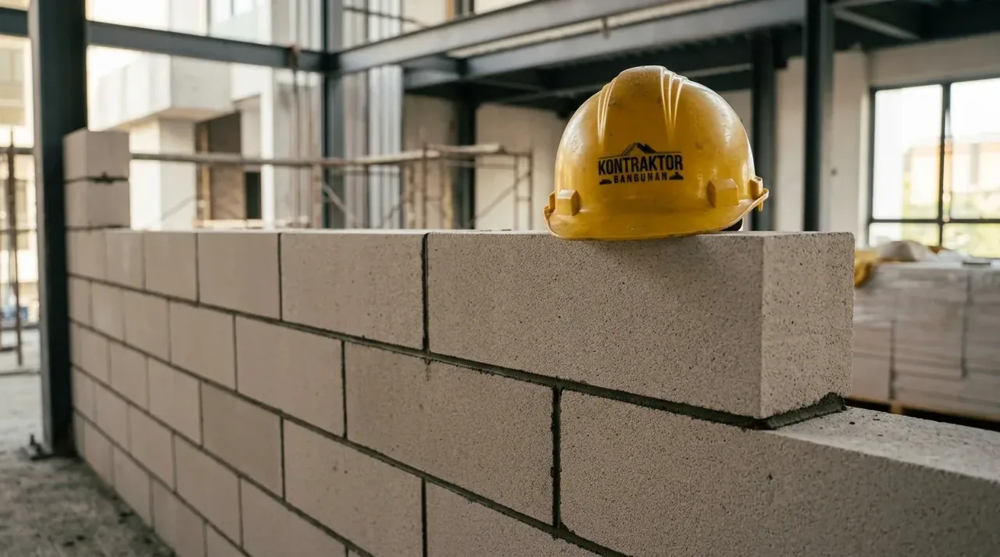

Apa Perbedaan Mendasar Standar Kualitas Bata Merah vs Bata Ringan?
Perbedaan mendasar standar kualitas bata merah vs bata ringan terletak pada densitas material, kapasitas beban tekan maksimal, serta koefisien insulasi termal pada dinding.
Dalam industri konstruksi modern, pemahaman mendalam tentang anatomi material adalah fondasi dari perencanaan proyek yang sukses. Bata merah, yang terbuat dari tanah liat yang dibakar pada suhu tinggi, telah menjadi standar industri selama berabad-abad. Material ini memiliki massa jenis yang tinggi, memberikan stabilitas yang solid serta massa termal yang sangat baik. Kualitas bata merah sangat bergantung pada homogenitas campuran tanah liat dan konsistensi suhu pembakaran. Semakin padat dan merata pembakarannya, semakin rendah tingkat porositasnya, yang berujung pada menurunnya daya serap air.
Di sisi lain, bata ringan atau Autoclaved Aerated Concrete (AAC) diproduksi melalui proses aerasi dan autoclaving yang canggih. Campuran pasir silika, semen, kapur, dan agen pengembang aluminium bubuk menciptakan struktur pori-pori udara mikro di dalam beton. Standar kualitas bata ringan diukur dari keseragaman ukuran sel udara ini, yang memberikan kombinasi unik antara bobot yang ringan dan kuat tekan yang memadai. Proses autoclave dengan uap bertekanan tinggi memastikan reaksi kimia yang menghasilkan kristal tobermorite, memberikan kekuatan struktural yang stabil tanpa menambah berat jenis material.
Berdasarkan Laporan Tren Konstruksi Nasional 2025 dari Kementerian PUPR, adopsi bata ringan pada proyek komersial skala menengah hingga besar di Indonesia telah meningkat sebesar 65% dalam tiga tahun terakhir. Peningkatan ini didorong oleh tuntutan industri untuk mengurangi beban mati pada fondasi bangunan bertingkat. Namun, bukan berarti bata merah ditinggalkan. Banyak pemilik usaha baru dan arsitek yang tetap mempertahankan bata merah untuk proyek-proyek low-rise, fasad ekspos, dan struktur yang memerlukan adaptasi bentuk yang rumit. Mengetahui perbedaan standar teknis ini memastikan Anda bekerja sama dengan vendor yang tepat, seperti Kontraktor Bangunan, yang mampu menyeimbangkan kebutuhan teknis dengan anggaran proyek Anda.
- Densitas Bahan: Bata ringan AAC (550–650 kg/m³) mereduksi beban mati struktur hingga sepertiga dari bata merah (1500–1800 kg/m³).
- Kuat Tekan Standar SNI: Bata merah press mencapai 5.0–10.0 N/mm² untuk dinding struktural, sedangkan AAC stabil di kisaran 4.0–5.0 N/mm² untuk dinding pengisi.
- Kebutuhan Mortar: Permukaan rata AAC memungkinkan spesi 3 mm (thin-bed), sementara bata merah membutuhkan 15–20 mm spesi konvensional.
Mengapa Ukuran Bata Ringan Hebel Mempercepat Proses Konstruksi?
Ukuran bata ringan hebel yang besar dan presisi meminimalkan jumlah spesi perekat yang dibutuhkan, sehingga mempercepat estimasi waktu penyelesaian dinding secara signifikan.
Dalam manajemen proyek konstruksi, waktu adalah variabel yang berbanding lurus dengan biaya tenaga kerja dan overhead. Ukuran bata ringan hebel yang beredar di pasaran umumnya memiliki panjang 60 cm, tinggi 20 cm, dan variasi ketebalan mulai dari 7,5 cm hingga 10 cm. Jika dibandingkan secara volumetrik, satu keping bata ringan setara dengan kurang lebih delapan hingga sepuluh keping bata merah standar. Dimensi yang masif namun ringan ini secara drastis mengubah dinamika produktivitas di lapangan. Tukang atau aplikator dapat menutup luasan dinding yang jauh lebih besar dalam satu hari kerja tanpa mengalami kelelahan yang berarti, berkat bobot material yang ergonomis.
Selain aspek dimensi makro, tingkat presisi ukuran bata ringan hebel memainkan peran krusial dalam efisiensi finishing. Pemotongan menggunakan teknologi pabrikasi wire-cutting memastikan setiap blok memiliki sudut siku yang sempurna dan permukaan yang rata. Hal ini berarti dinding yang dibangun dari bata ringan memiliki tingkat kelurusan dan kerataan yang sangat tinggi, bahkan sebelum diplester. Dalam praktiknya, dinding bata ringan hanya membutuhkan lapisan perekat (semen instan/mortar) setebal 3 mm, dan lapisan plester atau acian yang sangat tipis untuk mencapai hasil akhir yang sempurna.
Bagi manajer operasional yang mengejar timeline ketat, penggunaan bata ringan tidak hanya mempercepat proses pemasangan dinding, tetapi juga mempercepat waktu tunggu pengeringan (curing time). Mortar thin-bed yang digunakan mengering lebih cepat dibandingkan spesi semen-pasir konvensional yang tebal. Efisiensi pergerakan logistik di dalam site proyek juga meningkat, karena volume material yang harus dipindahkan secara manual berkurang secara drastis. Jika Anda merencanakan proyek skala besar dalam waktu dekat, pertimbangkan untuk berkonsultasi dengan Kontraktor Bangunan, dan jangan lupa untuk Unduh Katalog Material kami untuk melihat spesifikasi detail yang siap mendukung percepatan proyek Anda.

Penerapan ukuran bata ringan hebel dengan mortar perekat tipis memastikan dinding tegak lurus dan mempercepat tahapan plester acian di site proyek.
Seberapa Besar Pengaruh Kekuatan Bata Merah Press Terhadap Durabilitas?
Kekuatan bata merah press memberikan ketahanan struktural ekstra terhadap cuaca ekstrem dan kelembapan konstan, menjadikannya pilihan ideal untuk area basah dan terekspos.
Meskipun bata ringan menawarkan kecepatan dan efisiensi ruang, kekuatan bata merah press tetap memiliki keunggulan tak tertandingi dalam skenario struktural tertentu. Bata merah press diproduksi melalui proses pencetakan mekanis bertekanan tinggi sebelum melalui tahap pembakaran. Proses pemadatan ini menghilangkan rongga udara di dalam tanah liat, menghasilkan bata dengan tingkat kepadatan dan kuat tekan yang jauh melampaui bata merah tradisional cetak tangan. Kekuatan bata merah press ini sangat esensial ketika membangun struktur pendukung beban (load-bearing walls) pada bangunan satu hingga dua lantai, di mana dinding berfungsi ganda sebagai penopang struktur.
Dari perspektif manajemen risiko lingkungan, durabilitas bata merah terhadap penetrasi air menjadikannya material primadona untuk area-area kritis. Struktur bangunan yang bersentuhan langsung dengan tanah, seperti fondasi menerus, dinding penahan tanah (retaining walls), atau dinding kamar mandi basah, membutuhkan material yang tidak mudah mengalami degradasi akibat kapilaritas air. Kekuatan bata merah press mampu menahan kelembapan ekstrem tanpa kehilangan integritas strukturalnya. Karakteristik ini mencegah terjadinya masalah lanjutan seperti efflorescence (bercak garam putih) atau pelapukan dinding yang sering membebani biaya pemeliharaan bangunan komersial.
Studi komprehensif dari Asosiasi Kontraktor Indonesia (AKI) periode 2024-2026 mencatat bahwa penggunaan kekuatan bata merah press standar industri mampu menurunkan risiko retak rambut pada dinding hingga 30% pada bangunan yang berada di area dengan pergerakan tanah mikroseismik tinggi. Fleksibilitas material ini terhadap pergerakan mikroskopis, dikombinasikan dengan campuran spesi yang tepat, memberikan dinding kemampuan beradaptasi tanpa langsung patah. Untuk proyek-proyek dengan umur rencana (design life) yang panjang, berinvestasi pada bata merah berkualitas tinggi melalui mitra tepercaya seperti Kontraktor Bangunan adalah keputusan yang menjamin ketenangan pikiran di masa depan.
Bagaimana Komparasi Teknis dan Biaya Antara Kedua Material?
Analisis komparasi teknis menunjukkan bata ringan unggul dalam reduksi beban mati, sementara bata merah press menawarkan rasio fleksibilitas konstruksi yang lebih ekonomis untuk skala kecil.
Untuk merumuskan strategi pengadaan material yang efisien, para pemilik proyek B2B harus melihat melampaui harga satuan material. Total Cost of Ownership (TCO) dari sebuah dinding melibatkan biaya material blok, perekat, plester, acian, biaya tenaga kerja, waktu, hingga implikasi struktural pada fondasi. Dinding bata ringan memang memiliki harga per kubik yang lebih tinggi, namun secara drastis memangkas biaya tulangan besi dan ukuran fondasi beton karena sifatnya yang sangat ringan. Di sisi lain, ketersediaan bata merah yang melimpah menjadikannya sangat kompetitif secara logistik untuk proyek di area remote atau luar kota.
Berikut adalah tabel perbandingan spesifikasi teknis untuk panduan pengadaan proyek Anda:
| Spesifikasi / Fitur | Bata Ringan (AAC) | Bata Merah Press |
|---|---|---|
| Densitas / Berat Jenis | 550 - 650 kg/m³ (Sangat Ringan) | 1500 - 1800 kg/m³ (Berat) |
| Kuat Tekan | 4.0 - 5.0 N/mm² | 5.0 - 10.0 N/mm² |
| Material Perekat | Semen Instan / Thin-Bed (3 mm) | Semen Pasir Konvensional (15-20 mm) |
| Insulasi Termal | Sangat Baik (Menurunkan beban AC) | Baik (Menyimpan panas, melepas malam hari) |
| Kecepatan Pemasangan | ± 20 m² / hari kerja / tukang | ± 6-8 m² / hari kerja / tukang |
| Penyerapan Air | Cukup Tinggi (Perlu plester khusus) | Rendah hingga Sedang |
| Cocok Untuk | Gedung bertingkat, Proyek cepat B2B | Dinding basah, Ekspos, Bangunan bentang kecil |
Melalui analisis tabel di atas, keputusan akhir pengadaan harus disesuaikan dengan jenis fasilitas yang dibangun. Sebagai contoh, pembangunan pabrik atau fasilitas gudang ber-AC sangat diuntungkan oleh insulasi termal bata ringan yang menghemat konsumsi energi secara masif. Sebaliknya, pembangunan infrastruktur pembatas lahan industri (pagar panel/dinding keliling) lebih tahan uji cuaca bila menggunakan bata merah press bermutu tinggi. Tim spesialis di Kontraktor Bangunan siap merancang simulasi Cost Benefit Analysis (CBA) secara presisi agar alokasi investasi proyek Anda tepat sasaran.
Kapan Sebaiknya Memilih Kontraktor Bangunan Sebagai Mitra Strategis Anda?
Memilih mitra konstruksi yang kompeten memastikan implementasi standar kualitas bata merah vs bata ringan dilakukan sesuai spesifikasi teknik demi mencegah cacat struktural.
Kualitas material tingkat tinggi akan menjadi sia-sia jika tidak diiringi oleh metodologi pengerjaan (Work Method Statement) yang benar. Banyak kegagalan struktur dini—seperti dinding retak tembus, perembesan air, atau plesteran yang rontok—bukan disebabkan oleh material yang buruk, melainkan oleh aplikasi yang tidak memenuhi standar operasional. Contohnya, aplikasi bata ringan wajib menggunakan header dan stretcher yang dipasang secara presisi (staggered), serta pemasangan angkur dan praktis (kolom/balok) pada luasan dinding tertentu. Demikian pula, bata merah memerlukan proses perendaman air yang tepat sebelum diaplikasikan agar tidak menyerap kandungan air dari campuran semen perekat terlalu cepat.
Sebagai mitra strategis, Kontraktor Bangunan menerapkan Quality Control (QC) yang ketat pada setiap tahap pengerjaan. Kami mengintegrasikan manajemen rantai pasok logistik dengan kalibrasi kualitas lapangan untuk memastikan bahwa produk yang Anda lihat di spesifikasi katalog adalah persis yang terpasang kokoh di proyek Anda. Kami menyediakan layanan pasokan, konsultasi rekayasa struktur, dan eksekusi lapangan dari tim engineer tersertifikasi, guna memastikan efisiensi anggaran tanpa pernah mengorbankan durabilitas dan estetika bangunan komersial Anda.
Pertanyaan yang Sering Diajukan (FAQ)
Kesimpulan Praktis
Mengetahui dengan pasti perbedaan spesifikasi dan standar kualitas bata merah vs bata ringan adalah fondasi keberhasilan dari setiap proyek konstruksi di sektor industri maupun komersial. Jika bata ringan menawarkan akselerasi timeline yang sangat berharga dalam manajemen proyek modern, kekuatan bata merah press tetap relevan untuk memenuhi kebutuhan struktur tangguh di area spesifik. Evaluasi komprehensif terhadap bobot material, biaya pemasangan, dan metode kerja adalah langkah strategis untuk menekan anggaran overhead sekaligus memperpanjang usia bangunan.
Untuk mencapai hasil bangunan dengan durabilitas tinggi dan efisiensi biaya maksimal, Anda membutuhkan pendampingan teknis dan pasokan dari vendor terpercaya. Pastikan operasional dan pengembangan aset properti korporasi Anda ditangani oleh spesialis profesional. Silakan Unduh Katalog Material kami sekarang melalui platform resmi Kontraktor Bangunan, dan mari jadwalkan sesi konsultasi gratis untuk merancang struktur efisien dan kokoh bagi proyek Anda berikutnya.